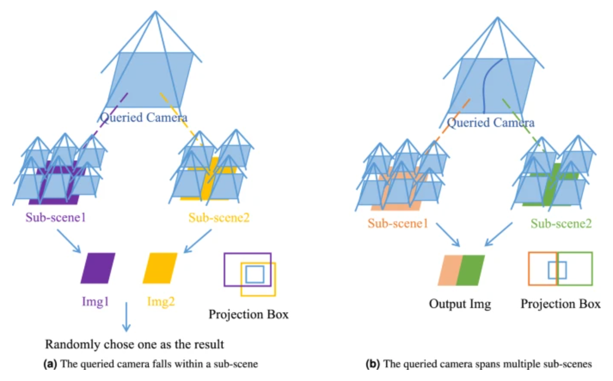
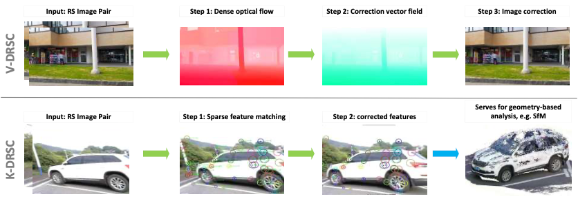
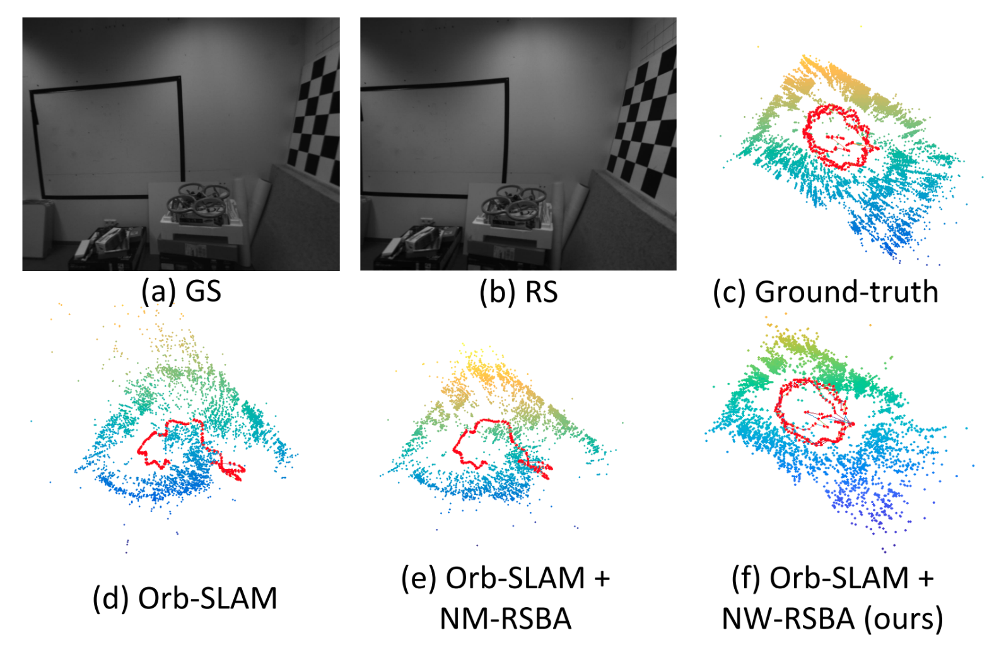
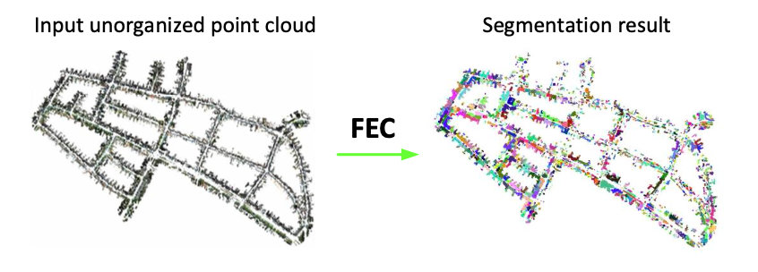

野外环境下的鲁棒三维重建
从视觉歧义、长尾分布与物理尺度塌缩出发，复盘野外三维重建的研究路径，并讨论数据工程如何成为模型设计的一部分。
I am a researcher in 3D computer vision, with a particular interest in metric-accurate and geometrically faithful 3D generation and reconstruction. My research spans multi-view geometry, neural 3D representations, and large-scale reconstruction, with the broader goal of bridging geometric principles and learning-based approaches.
I received my Master's degree from Hunan University, advised by Prof. Yizhen Lao, where I worked on Neural Radiance Fields (NeRFs), large-scale 3D reconstruction, and rolling-shutter geometry. Before pursuing research in 3D vision, I was a core member of the ACM competitive programming team, where I developed a strong foundation in algorithms and data structures, particularly graph algorithms. I won two bronze medals at the ICPC Asia Regional Contests.
I am currently open to long-term research collaborations with academia and industry.
从视觉歧义、长尾分布与物理尺度塌缩出发，复盘野外三维重建的研究路径，并讨论数据工程如何成为模型设计的一部分。
* equal contribution · † corresponding author



